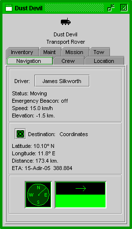
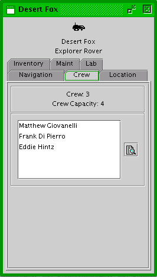
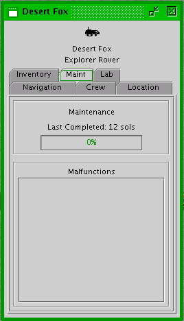
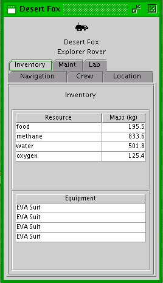
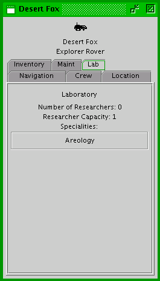
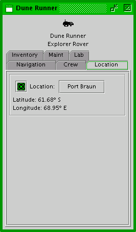
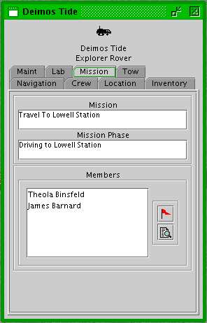

Mars Simulation Project
|
|  |
| Rover Info Window - Navigation Tab |
The rover info window displays information about an individual rover. The top of the window displays the rover's icon, name and rover type. A number of tab panels are available for viewing particular information.
Navigation - The navigation tab panel shows destination and movement information about the rover.
The current driver of the rover (if any) is displayed on a button at the top of this panel. Clicking the button will open a person info window for the driver.
The rover's general status information is displayed at the top. Status can be: moving, parked, broken down, stuck and undergoing periodic maintenance. The emergency beacon is turned on by the crew when a rover does not have enough fuel and supplies to reach a settlement. This panel also contains the rover's current speed and elevation.
The destination box displays information about the rover's destination if it is moving. If the destination is a settlement, a button with the settlement's name is displayed. Clicking on it will open the settlement's info window. The green target icon button at the left will recenter the Mars Navigator map on the rover's destination. The latitude and longitude of the destination is shown, as well as the ETA and current distance to the destination.
The bottom left box displays the current terrain grade if the vehicle were traveling to the right.
The bottom right box displays the direction the rover is currently traveling.
|  |
| Rover Info Window - Crew Tab |
Crew - The crew tab panel contains information about the rover's crew.
The current crew number and the maximum crew capacity are displayed in the top box.
A list of the passengers of the rover are in the bottom box. Double clicking on any of them will open up their respective person info window. The monitor button to the right of the crew list will create custom tab in the monitor tool for the rover's crew.
|  |
| Rover Info Window - Maintenance Tab |
Maintenance - The maintenance tab panel contains information about the rover's condition.
The maintenance box shows the amount of time (in millisols) since the rover was last given periodic maintenance in a settlement garage. The longer a rover is operated between periodic maintenance, the more likely it is to malfunction. If periodic maintenance is underway, the bar below it displays the progress.
The malfunction box shows any current malfunctions in the rover. Three bars below each malfunction show the progress in emergency, normal and EVA repairs for the malfunction. Repair progress bars with "n/a" on them do not apply for the particular malfunction.
|  |
| Rover Info Window - Inventory Tab |
Inventory - The inventory tab panel contains information about the rover's inventory of resources and equipment.
The resources box shows the mass of particular resources in the rover's inventory.
The equipment box shows the number of particular pieces of equipment in the rover's inventory.
|  |
| Rover Info Window - Lab Tab |
Lab - The lab tab panel contains information about a rover's laboratory if it has one.
The upper box displays the current number of researchers using the laboratory and the maximum number of researchers who can use the laboratory at any given time. It also shows the technology level of the laboratory.
The lower box shows the scientific specialties of the laboratory.
|  |
| Rover Info Window - Location Tab |
Location - The location tab panel contains information about the rover's current location.
The location box shows the rover's current latitude and longitude. If the rover is parked at a settlement, a button with the settlement's name is displayed. Clicking on it will open the settlement's info window. The green target icon button at the left will recenter the Mars Navigator map on the rover's location.
|  |
| Rover Info Window - Mission Tab |
Mission - The mission tab panel contains information about the rover's current mission if any.
The top panel shows the name of the rover's current mission as well as it's current mission phase.
The bottom list shows the people on the mission, even if they are not currently on board the rover. On the right are the mission button, which will open the mission tool and select this mission, and the monitor button, which will open a tab on the monitor tool showing the people on the mission.
 |
| Rover Info Window - Tow Tab |
Tow - The tow tab panel contains information about what vehicle the rover is currently towing and/or being towed by.
The top panel shows what vehicle this rover is currently towing. Clicking on the vehicle button will open a vehicle info window for that vehicle.
The bottom panel shows what vehicle is currently towing this rover. Clicking on the vehicle button will open a vehicle info window for that vehicle.
Please send questions or comments to mars-sim-users@lists.sourceforge.net
Mars Simulation Project copyright © Scott Davis, 2008
Map data courtesy of NASA Jet Propulsion Laboratory